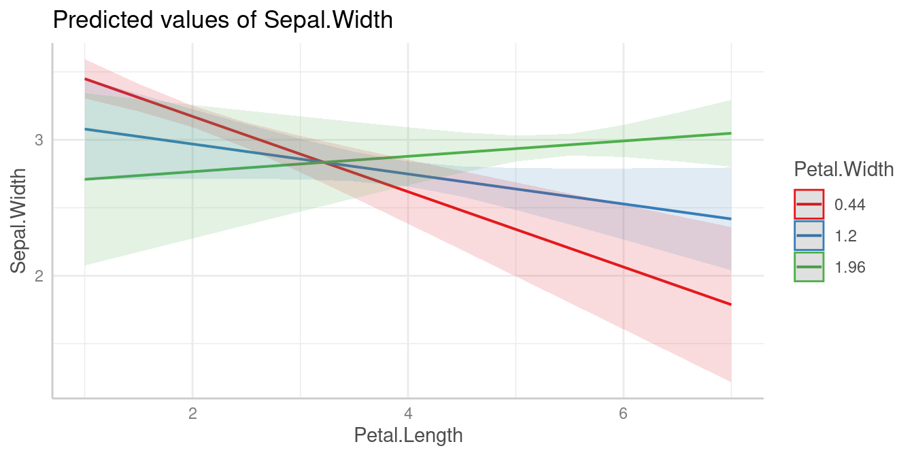
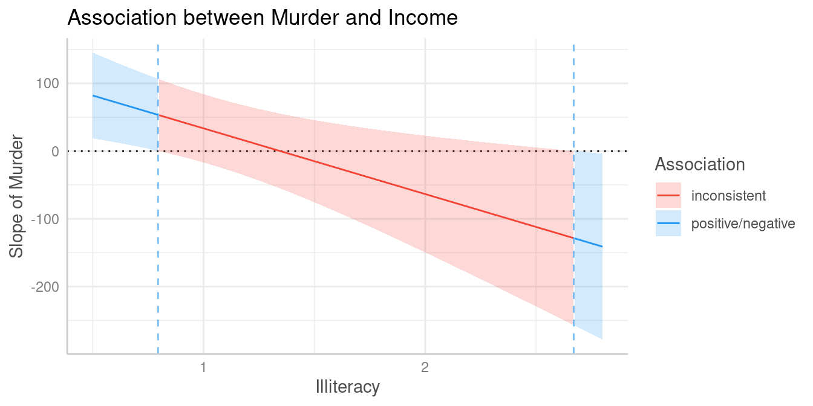

Significance Testing of Differences Between Predictions II: Comparisons of Slopes, Floodlight and Spotlight Analysis (Johnson-Neyman Intervals)
Daniel Lüdecke
2024-04-03
Source:vignettes/introduction_comparisons_2.Rmd
introduction_comparisons_2.RmdThis vignette is the second in a 3-part series:
Significance Testing of Differences Between Predictions I: Contrasts and Pairwise Comparisons
Significance Testing of Differences Between Predictions II: Comparisons of Slopes, Floodlight and Spotlight Analysis (Johnson-Neyman Intervals)
Hypothesis testing for slopes of numeric predictors
For numeric focal terms, it is possible to conduct hypothesis testing for slopes, or the linear trend of these focal terms.
Let’s start with a simple example again.
library(ggeffects)
library(parameters)
data(iris)
m <- lm(Sepal.Width ~ Sepal.Length + Species, data = iris)
model_parameters(m)
#> Parameter | Coefficient | SE | 95% CI | t(146) | p
#> ----------------------------------------------------------------------------
#> (Intercept) | 1.68 | 0.24 | [ 1.21, 2.14] | 7.12 | < .001
#> Sepal Length | 0.35 | 0.05 | [ 0.26, 0.44] | 7.56 | < .001
#> Species [versicolor] | -0.98 | 0.07 | [-1.13, -0.84] | -13.64 | < .001
#> Species [virginica] | -1.01 | 0.09 | [-1.19, -0.82] | -10.80 | < .001We can already see from the coefficient table that the slope for
Sepal.Length is 0.35. We will thus find the same increase
for the predicted values in our outcome when our focal variable,
Sepal.Length increases by one unit.
predict_response(m, "Sepal.Length [4,5,6,7]")
#> # Predicted values of Sepal.Width
#>
#> Sepal.Length | Predicted | 95% CI
#> -------------------------------------
#> 4 | 3.08 | 2.95, 3.20
#> 5 | 3.43 | 3.35, 3.51
#> 6 | 3.78 | 3.65, 3.90
#> 7 | 4.13 | 3.93, 4.33
#>
#> Adjusted for:
#> * Species = setosaConsequently, in this case of a simple slope, we see the same result
for the hypothesis test for the linar trend of
Sepal.Length:
test_predictions(m, "Sepal.Length")
#> # (Average) Linear trend for Sepal.Length
#>
#> Slope | 95% CI | p
#> ---------------------------
#> 0.35 | 0.26, 0.44 | < .001Is the linear trend of Sepal.Length significant for the
different levels of Species?
Let’s move on to a more complex example with an interaction between a numeric and categorical variable.
Predictions
m <- lm(Sepal.Width ~ Sepal.Length * Species, data = iris)
pred <- predict_response(m, c("Sepal.Length", "Species"))
plot(pred)
Slopes by group
We can see that the slope of Sepal.Length is different
within each group of Species.

Since we don’t want to do pairwise comparisons, we set
test = NULL. In this case, when interaction terms are
included, the linear trend (slope) for our numeric focal
predictor, Sepal.Length, is tested for each level of
Species.
test_predictions(m, c("Sepal.Length", "Species"), test = NULL)
#> # (Average) Linear trend for Sepal.Length
#>
#> Species | Slope | 95% CI | p
#> ----------------------------------------
#> setosa | 0.80 | 0.58, 1.02 | < .001
#> versicolor | 0.32 | 0.17, 0.47 | < .001
#> virginica | 0.23 | 0.11, 0.35 | < .001As we can see, each of the three slopes is significant, i.e. we have “significant” linear trends.
Pairwise comparisons
Next question could be whether or not linear trends differ
significantly between each other, i.e. we test differences in slopes,
which is a pairwise comparison between slopes. To do this, we use the
default for test, which is "pairwise".
test_predictions(m, c("Sepal.Length", "Species"))
#> # (Average) Linear trend for Sepal.Length
#>
#> Species | Contrast | 95% CI | p
#> ------------------------------------------------------
#> setosa-versicolor | 0.48 | 0.21, 0.74 | < .001
#> setosa-virginica | 0.57 | 0.32, 0.82 | < .001
#> versicolor-virginica | 0.09 | -0.10, 0.28 | 0.367The linear trend of Sepal.Length within
setosa is significantly different from the linear trend of
versicolor and also from virginica. The
difference of slopes between virginica and
versicolor is not statistically significant (p =
0.367).
Is the difference linear trends of Sepal.Length in
between two groups of Species significantly different from
the difference of two linear trends between two other groups?
Similar to the example for categorical predictors, we can also test a
difference-in-differences for this example. For instance, is the
difference of the slopes from Sepal.Length between
setosa and versicolor different from the
slope-difference for the groups setosa and
vigninica?
This difference-in-differences we’re interested in is again indicated by the purple arrow in the below plot.

Let’s look at the different slopes separately first, i.e. the slopes
of Sepal.Length by levels of Species:
test_predictions(m, c("Sepal.Length", "Species"), test = NULL)
#> # (Average) Linear trend for Sepal.Length
#>
#> Species | Slope | 95% CI | p
#> ----------------------------------------
#> setosa | 0.80 | 0.58, 1.02 | < .001
#> versicolor | 0.32 | 0.17, 0.47 | < .001
#> virginica | 0.23 | 0.11, 0.35 | < .001The first difference of slopes we’re interested in is the one between
setosa (0.8) and versicolor (0.32),
i.e. b1 - b2 (=0.48). The second difference is between
levels setosa (0.8) and virginica (0.23),
which is b1 - b3 (=0.57). We test the null hypothesis that
(b1 - b2) = (b1 - b3).
test_predictions(m, c("Sepal.Length", "Species"), test = "(b1 - b2) = (b1 - b3)")
#> Hypothesis | Contrast | 95% CI | p
#> ------------------------------------------------
#> (b1-b2)=(b1-b3) | -0.09 | -0.28, 0.10 | 0.367
#>
#> Tested hypothesis: (Species[setosa] - Species[versicolor]) = (Species[setosa] - Species[virginica])The difference between the two differences is -0.09 and not statistically significant (p = 0.367).
Is the linear trend of Sepal.Length significant at
different values of another numeric predictor?
When we have two numeric terms in an interaction, the comparison becomes more difficult, because we have to find meaningful (or representative) values for the moderator, at which the associations between the predictor and outcome are tested. We no longer have distinct categories for the moderator variable.
Spotlight analysis, floodlight analysis and Johnson-Neyman intervals
The last examples show interactions between two numeric predictors.
In case of interaction terms, adjusted predictions are usually shown at
representative values. If a numeric variable is
specified as second or third interaction term, representative values
(see values_at()) are typically mean +/- SD. This is
sometimes also called “spotlight analysis” (Spiller et
al. 2013).
In the next example, we have Petal.Width as second
interaction term, thus we see the predicted values of
Sepal.Width (our outcome) for Petal.Length at
three different, representative values of Petal.Width: Mean
(1.2), 1 SD above the mean (1.96) and 1 SD below the mean (0.44).
Predictions
m <- lm(Sepal.Width ~ Petal.Length * Petal.Width, data = iris)
pred <- predict_response(m, c("Petal.Length", "Petal.Width"))
plot(pred)
For test_predictions(), these three values (mean, +1 SD
and -1 SD) work in the same way as if Petal.Width was a
categorical predictor with three levels.
First, we want to see at which value of Petal.Width the
slopes of Petal.Length are significant. We do no pairwise
comparison here, hence we set test = NULL.
test_predictions(pred, test = NULL)
#> # (Average) Linear trend for Petal.Length
#>
#> Petal.Width | Slope | 95% CI | p
#> -------------------------------------------
#> 0.44 | -0.28 | -0.39, -0.16 | < .001
#> 1.20 | -0.11 | -0.23, 0.01 | 0.075
#> 1.96 | 0.06 | -0.09, 0.20 | 0.438
# same as:
# test_predictions(m, c("Petal.Length", "Petal.Width"), test = NULL)Pairwise comparisons
The results of the pairwise comparison are shown below. These tell us that all linear trends (slopes) are significantly different from each other, i.e. the slope of the green line is significantly different from the slope of the red line, and so on.
test_predictions(pred)
#> # (Average) Linear trend for Petal.Length
#>
#> Petal.Width | Contrast | 95% CI | p
#> ----------------------------------------------
#> 0.44-1.2 | -0.17 | -0.21, -0.12 | < .001
#> 0.44-1.96 | -0.33 | -0.43, -0.24 | < .001
#> 1.2-1.96 | -0.17 | -0.21, -0.12 | < .001Floodlight analysis and Johnson-Neyman intervals
Another way to handle models with two numeric variables in an
interaction is to use so-called floodlight analysis, a spotlight
analysis for all values of the moderator variable, which is implemented
in the johnson_neyman() function that creates
Johnson-Neyman intervals. These intervals indicate the values of the
moderator at which the slope of the predictor is significant
(cf. Johnson et al. 1950, McCabe et al. 2018).
Let’s look at an example. We first plot the predicted values of
Income for Murder at nine different values of
Illiteracy (there are no more colors in the default palette
to show more lines).
states <- as.data.frame(state.x77)
states$HSGrad <- states$`HS Grad`
m_mod <- lm(Income ~ HSGrad + Murder * Illiteracy, data = states)
myfun <- seq(0.5, 3, length.out = 9)
pr <- predict_response(m_mod, c("Murder", "Illiteracy [myfun]"))
plot(pr)
It’s difficult to say at which values from Illiteracy,
the association between Murder and Income
might be statistically signifiant. We still can use
test_predictions():
test_predictions(pr, test = NULL)
#> # (Average) Linear trend for Murder
#>
#> Illiteracy | Slope | 95% CI | p
#> ----------------------------------------------
#> 0.50 | 82.08 | 18.69, 145.47 | 0.012
#> 0.81 | 51.76 | -1.10, 104.61 | 0.055
#> 1.12 | 21.43 | -29.44, 72.30 | 0.401
#> 1.44 | -8.89 | -67.20, 49.42 | 0.760
#> 1.75 | -39.22 | -111.55, 33.12 | 0.281
#> 2.06 | -69.54 | -159.45, 20.37 | 0.126
#> 2.38 | -99.87 | -209.20, 9.46 | 0.072
#> 2.69 | -130.19 | -259.97, -0.41 | 0.049
#> 3.00 | -160.52 | -311.34, -9.69 | 0.038As can be seen, the results might indicate that at the lower and
upper tails of Illiteracy, i.e. when
Illiteracy is roughly smaller than 0.8 or
larger than 2.6, the association between
Murder and Income is statistically
signifiant.
However, this test can be simplified using the
johnson_neyman() function:
johnson_neyman(pr)
#> The association between `Murder` and `Income` is positive for values of
#> `Illiteracy` lower than 0.79 and negative for values higher than 2.67.
#> Inside the interval of [0.79, 2.67], there were no clear associations.Furthermore, it is possible to create a spotlight-plot.
plot(johnson_neyman(pr))
#> The association between `Murder` and `Income` is positive for values of `Illiteracy` lower than 0.80 and negative for values higher than 2.67. Inside the interval of [0.80, 2.67], there were no clear associations.
To avoid misleading interpretations of the plot, we speak of “positive” and “negative” associations, respectively, or “no clear” associations (instead of “significant” or “non-significant”). This should prevent considering a non-significant range of values of the moderator as “accepting the null hypothesis”.
The results of the spotlight analysis suggest that values below
0.79 and above 2.67 are significantly
different from zero, while values in between are not. We can plot
predictions at these values to see the differences. The red and the
green line represent values of Illiteracy at which we find
clear positive resp. negative associations between Murder
and Income, while we find no clear (positive or negative)
association for the blue line.
pr <- predict_response(m_mod, c("Murder", "Illiteracy [0.7, 1.5, 2.8]"))
plot(pr, grid = TRUE)
References
Johnson, P.O. & Fay, L.C. (1950). The Johnson-Neyman technique, its theory and application. Psychometrika, 15, 349-367. doi: 10.1007/BF02288864
McCabe CJ, Kim DS, King KM. (2018). Improving Present Practices in the Visual Display of Interactions. Advances in Methods and Practices in Psychological Science, 1(2):147-165. doi:10.1177/2515245917746792
Spiller, S. A., Fitzsimons, G. J., Lynch, J. G., & McClelland, G. H. (2013). Spotlights, Floodlights, and the Magic Number Zero: Simple Effects Tests in Moderated Regression. Journal of Marketing Research, 50(2), 277–288. doi:10.1509/jmr.12.0420